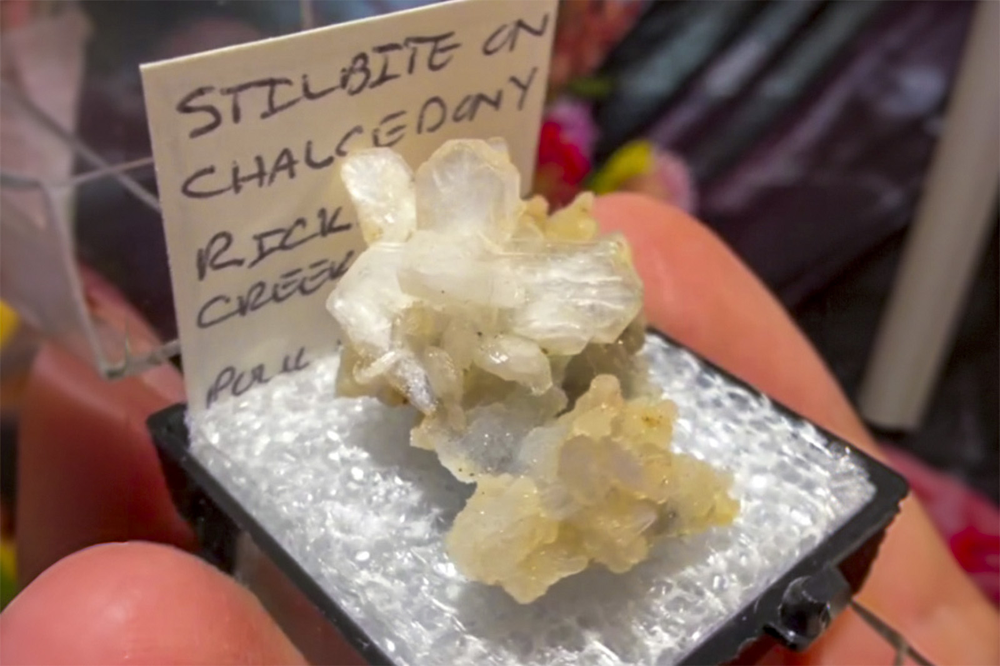

Stilbite
"Stilbite on Chalcedony TN"
III-10868
Rickreall Creek Quarry, Dallas, Polk County, Oregon, USA
Purchased 8/16/2026 from MinCollect for $20.57
Details
Storage: Unassigned
Tray: 000 None
Size class: Miniature (0)
Dimensions: 2.5 × 2.2 × 1.4 cm
Mass: 3.6 g